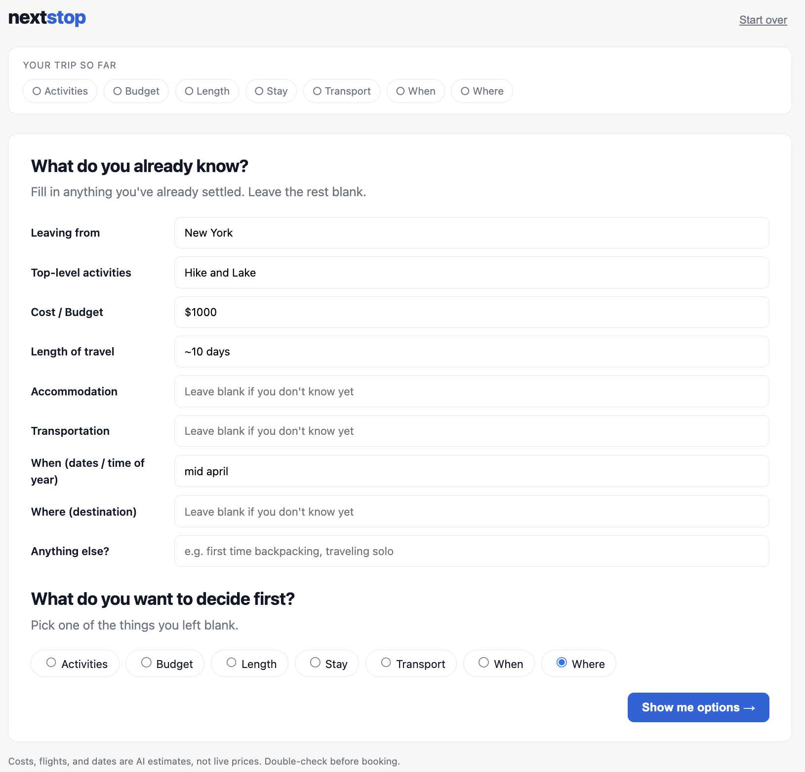
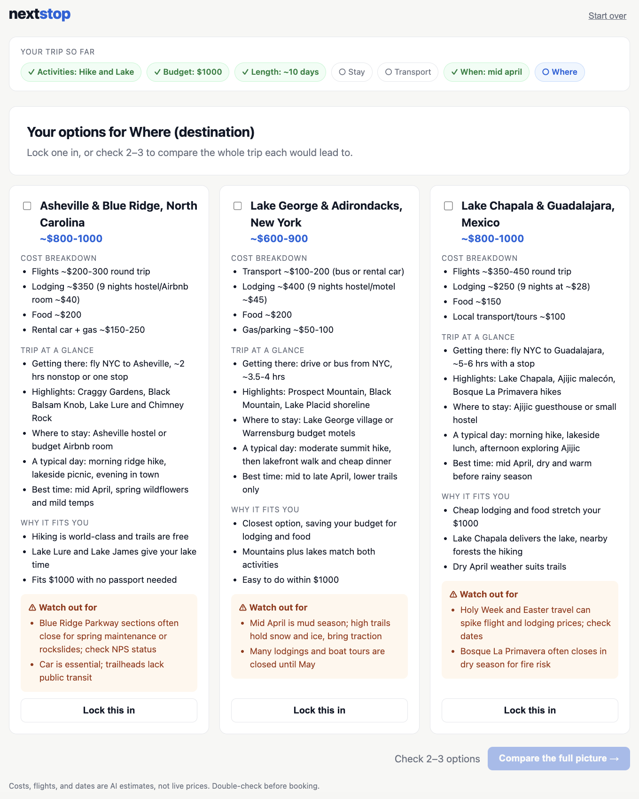
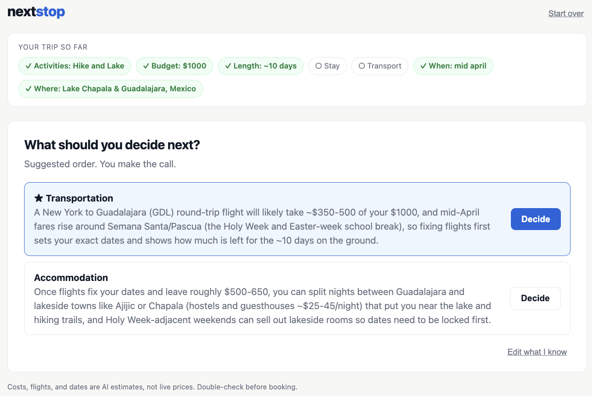
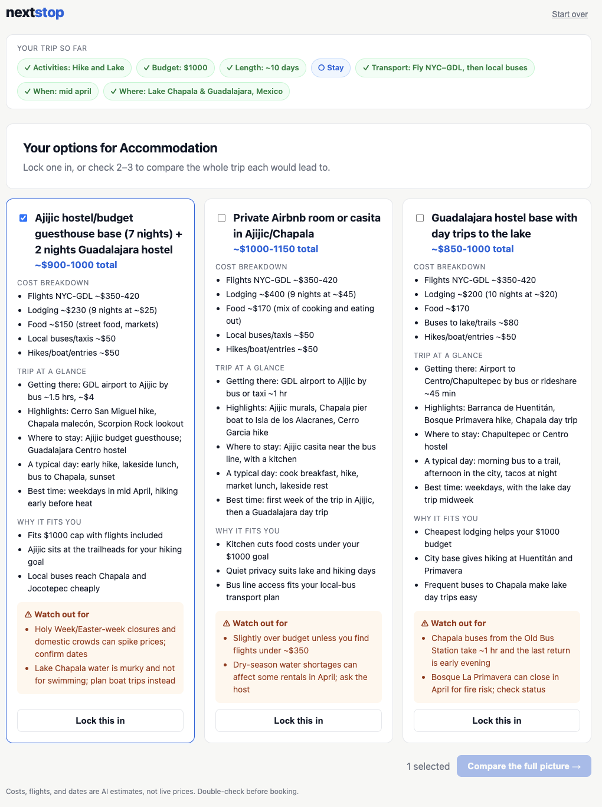
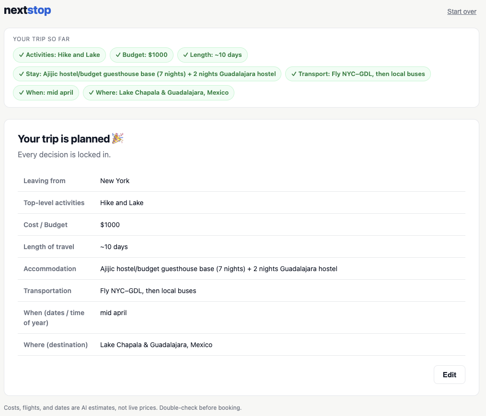
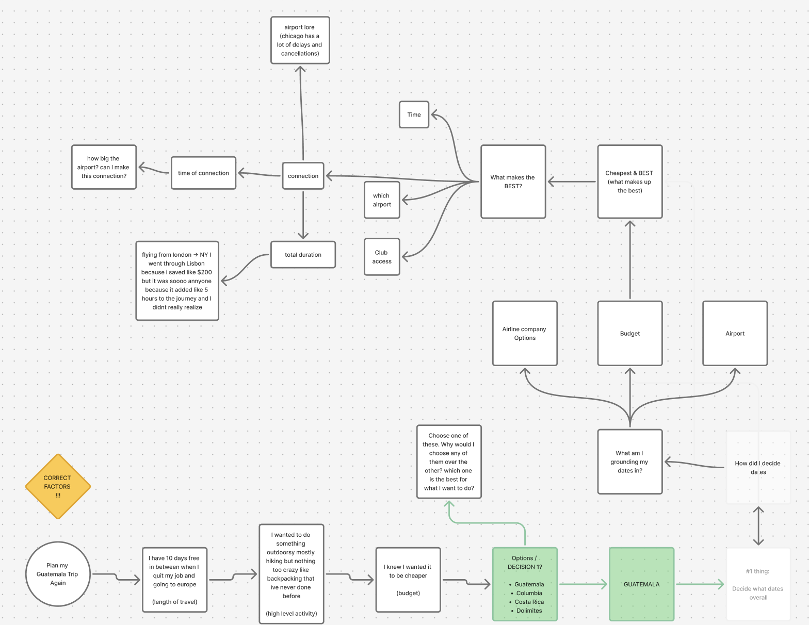
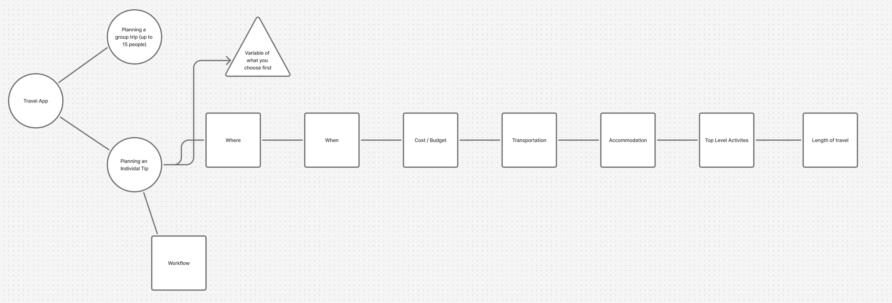

A trip planner for people who love planning: start with what you know, compare the full trade-offs, and let AI help you make one decision at a time, instead of handing you a finished trip from one prompt.
Current Status: Build 1: local prototype
Demo: Local prototype screenshots below. Trip: from New York, hiking and lakes, $1,000, ~10 days, mid-April. Cloud app link and 2-minute video come in Build 5.





Who is this for? Me: I love planning trips, solo and with groups, and I'm usually the one doing the planning. I'm the first tester (replaying my real Guatemala trip), followed by friends I travel with.
The painful "Before" workflow: For my solo Guatemala trip, I started with what I knew: 10 free days between jobs, wanting moderate hiking and a first backpacking trip, and wanting it cheap. Then I compared Guatemala, Colombia, Costa Rica, and the Dolomites across dozens of tabs, and worked out dates by digging through airlines, airports, and connections. "Cheapest" isn't "best": I once flew London → NY through Lisbon to save $200, and it added about 5 hours I didn't see coming. One-prompt AI planners skip all of this and hand you an itinerary you didn't really decide.

The "After" workflow with this product: A layered planner. I enter my knowns and choose what to decide first. The AI suggests 2–4 options, with why each fits me and the hidden trade-offs. Before committing, I can shortlist 2–3 options and see the full picture of each side by side (rough cost, flights, best dates, activities, lodging). I lock the decision, the AI suggests what to decide next (I make the final call), and I repeat until the trip is planned.

Riskiest Assumption: AI-estimated costs, flights, and travel times are accurate enough to trust when comparing options. Without real data they may be wrong, and the Build 3 "deal-checking agent" will test this.
Why this needs AI (not just "faster"):
Positioning: Travel AI is crowded (Mindtrip, Layla, Wanderlog, ChatGPT). Nextstop's edge is the approach: layered, you decide, with trade-offs, the full picture, and "watch out for" warnings. It also has structure: it remembers your locked decisions, shows side-by-side comparisons, and guides your next step, so you aren't managing a long back-and-forth chat.
Agent vision (Build 3+): An agent searches real sources (flights, hotels, Airbnb, Vrbo) to replace AI estimates with real prices and connections.
What I learned testing it: I had an agent search Airbnb, Vrbo, and hotel sites and report back. It worked, but these sites' terms of service prohibit bots and scrapers, and automated searching can get accounts flagged. So Nextstop will use official data sources (partner programs and flight-data APIs) instead of scraping. It will never log in to, book from, or message from a user's travel accounts.
Simple Architecture: Browser page (your knowns and locked decisions) → Python/Flask server (keeps the API key private) → Claude Sonnet 5.5 via OpenRouter (options, full-picture comparison, next-decision ranking) → option cards, comparison table, and suggested next step. Currently all AI estimates; real flight and lodging data planned for Build 3.
.env, and learned that a key's spending limit isn't the same as having credits (my first calls failed with "402 Payment Required"). Terminus Episodes 1 & 2 were a fun refresher. I've used the terminal a lot because of my background, so the game mostly reinforced commands I already knew.